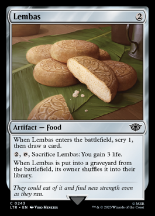

Ichor Wellsping
We use this artifact for card draw and as one of the targets for Deadly Dispute to generate imense card draw advantage. You could also use it for Troublemaker Ouphe target.

Lembas
We use Lembas much like Ichor Wellsping as well as the life gain it offers us in a pinch. Not to mention that it shuffles itself upon death.
Tithing Blade
Tithing Blade is an amazing alternative to cards like Chainer's Edict where we get an aditional target for before mentioned cards, but also a nice late game craft that you can see when hovering over the card.